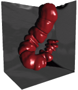
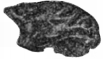
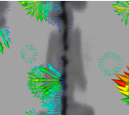

Research
Current Projects
A Software Library for Active Inference
The goal of this project is to develop an open, reusable, high-quality library for implementing active inference systems both in simulation and in embedded robotic hardware/software. The current focus is on the continuous-time formulation of active inference and the related algorithms: dynamic expectation maximization (libdem), variation filtering (libvf), and generalized filtering (libgf).
Design Principles of Active Inference Systems
This is a largely theoretical investigation into the generative models that might underlie biological (cognitive) systems. There are many open questions. What mathematical properties might the state spaces have? How much of the generative models are encoded in genes, development, and learning? Is there a clear dividing line between the cognitive and non-cognitive processes? Etc.
Previous Projects
Segmentation and Polyp Detection in CT Colonography

CT Colonography (also known as Virtual Colonoscopy) is a minimally invasive screening technique for colorectal polyps. Mixed success has been achieved in clinical trials, in large part due to variations in reader experience, the large number of images, and the complex geometry of the colon. Similar to mammography and lung nodule detection, computer polyp detection (CPD) and computer-aided polyp detection (CAPD) promise to improve the sensitivity and specificity of CTC. Our long term goal is to develop robust CAPD methods. Our current focus is on feature discovery, colon registration, and classifier design.
Collaborators: Pete Santago, Wake Forest University School of Medicine.
Relevant Papers:
- J. W. Suh and C. L. Wyatt, Registration of prone and supine colons in the presence of topological changes, 2008 SPIE International Symposium on Medical Imaging , Proc. of SPIE Vol. 6916 69160C-1-69160C10.
- J. W. Suh and C. L. Wyatt, Deformable Registration of Supine and Prone Ccolons Using Centerline Analysis, 2007 IEEE International Symposium on Biomedical Imaging
- J. W. Suh and C. L. Wyatt, Deformable Registration of Prone and Supine Colons for CT Colonography, Proceedings of IEEE Engineering in Medicine and Biology Conference, August 2006
- C. L. Wyatt, Y. Ge, David Vining, Segmentation in Virtual Colonoscopy Using a Geometric Deformable Model, Computerized Medical Imaging and Graphics, 30 (1): 17-30 Jan 2006.
- C. L. Wyatt, Y. Ge, D. J. Vining,Automatic Segmentation of the Colon for Virtual Colonoscopy, Computerized Medical Imaging and Graphics, Vol. 24 No. 1 pgs. 1-9, Jan-Feb 2000.
Neurological Image Analysis in Primate Models of Alcohol and Drug Abuse

This research applies image analysis techniques commonly used in humans to primates, such as Macaques, in order to determine structural changes in brain morphometry due to the effects of alcohol and various pharmacological agents.
Collaborators: Bob Kraft, Jim Daunais, David Freeman, Linda Porrino, Carol Shively, Wake Forest University School of Medicine.
Relevant Papers: * E. V. Sullivan, H. J. Sable, W. N Strother, D. P. Friedman, A. Davenport, H. Tillman-Smith, R. A. Kraft, C. L. Wyatt, K. T. Szeliga, N. C. Buchheimer, J. B. Daunais, E. Adalsteinsson, A. Pfefferbaum, K. A Grant, Neuroimaging of Rodent and Primate Models of Alcoholism: Initial Reports from the Integrative Neuroscience Initiative on Alcoholism, Alcoholism: Clinical and Experimental Research Vol. 29 No. 2 pgs 287-294 Feb 2005.
Registration using Embedded Maps

This work was funded by the National Institutes of Health through the NIH Roadmap for Medical Research, Grant U54 RR021813 entitled Center for Computational Biology (CCB). Information on the National Centers for Biomedical Computing can be obtained from http://nihroadmap.nih.gov/bioinformatics.
Structural brain changes that occur during the process of normal aging are of great interest to neuroscientists investigating age-related changes in cognitive function. A variety of techniques currently exist to identify group differences in brain anatomy with the greatest focus having been placed on cortical anatomy. Although cortical anatomy is of considerable significance, the underlying white matter tracts are at great risk in the aged brain. Patchy white matter lesions referred to as leukoaraiosis (LA) have long been identified radiologically as T2-weighted hyperintensities in older adults.
Techniques such as voxel-based morphometry (VBM), deformation-based morphometry (DBM), or tissue thickness measurements allow for quantitative comparisons of white matter in a regionally specific manner. However, VBM is dependent upon segmentation algorithms to measure tissue density, a task difficult in images displaying the diffuse contrast changes associated with LA. Similarly, DBM is dependent on registration algorithms to establish a spatial correspondence between images. Unfortunately, current image registration methods do not perform effectively in regions where tissue contrast has changed, such as in leukoaraiosis.
The goal of this project is to evaluate the relationship between changes in cognitive function and cerebral white matter in older adults. Since current VBM and DBM methods cannot be applied to subjects with leukoaraiosis, the project will expand current image registration techniques to accommodate topological changes in the images. The following specific aims are proposed:
Aim 1: Develop a deformable registration method for images represented as embedded maps, employing the level-set framework. We will develop a deformable registration approach representing each image as an embedded map. This registration framework will simultaneously account for changes in intensity and morphology between image pairs.
Aim 2: Identify the relationship between executive cognitive functions and age-related changes in cerebral white matter using the level-set based registration of embedded maps approach. To evaluate white matter integrity, quantitative T1 and T2 maps will be registered using the embedded maps algorithm developed in Aim 1. We will identify white matter intensity and volume changes (i.e. leukoaraiosis) in a regionally specific manner and correlate these changes with cognitive function.
Collaborators: Paul Laurienti, Bob Kraft, Wake Forest University School of Medicine.
Relevant Papers:
- X. Long and C. Wyatt, An Automatic Unsupervised Classification of MR Images in Alzheimer’s Disease, CVPR 2010.
- X. Li and C. Wyatt, Modeling Topological Changes In Deformable Registration, ISBI 2010.
- V. Rajagopalan, C. L. Wyatt, Combining Morphometric Evidence from Multiple Registration Methods using Dempster-Shafer Theory, Proc. SPIE 7623, 76231U (2010), DOI:10.1117/12.844002
- X. Li and C.L. Wyatt, Brain Segmentation Performance using T1-weighted Images versus T1 Maps Proc. SPIE 7623, 76233R (2010), DOI:10.1117/12.844278.
- X. Long and C. Wyatt, Structural template formation with discovery of subclasses, Proc. SPIE 7623, 76231B (2010), DOI:10.1117/12.843994.
- C. L. Wyatt and P. J. Laurienti, Nonrigid Registration of Images with Different Topologies using Embedded Maps, Proceedings of IEEE Engineering in Medicine and Biology Conference, August 2006
Multiscale CT and Virtual Histology
As part of my previous work with the now-defunct Biomedical Imaging Division, I conducted research on various aspects of image analysis related to advanced nano/micro CT imaging.